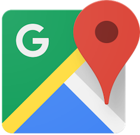
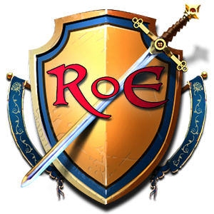
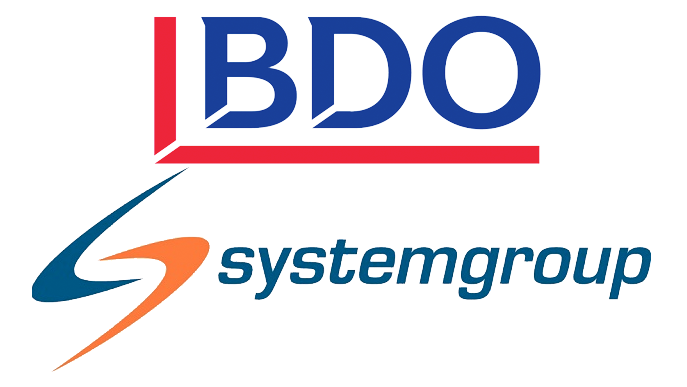

Work
Google

Seattle, WA, United States
January - April 2017
Google Maps for Android
Software Engineering Intern
Working at Google has really brought perspective on what it's like working at a massive company. Maps is one of
Google's most used products, and I felt really great to be given an opportunity to contribute to something that
is so widely used. They have really similar benefits to Yahoo!, but work wise, I found that it takes
significantly longer to develop a feature at a large company than a small one. The coding style guide is very
strict, and I really found that to be a good thing. My coding style and ability has greatly improved from code
reviews alone.
Yahoo!

Sunnyvale, CA, United States
May - August 2016
Polyvore Revenue Team
Software Engineering Intern
Polyvore has the best company culture I have experienced so far. It was also a huge jump for me, from living
close to home for my whole life, to going out to the bay area. I didn't know how these tech companies supply you
with delicious meals, an on-site gym, baristas on every building, and much more. I felt like I was living the
dream. As for work, my team made an effort to give me meaningful tasks, such as adding cost-per-click
monetizations, boosting the site's revenue by up to 10%.
BDA Entertainment

Mississauga, ON, Canada
September - December 2015
Chat Team
Web/Mobile Developer Intern
I joined this company to experience working at a super small startup of 8 people. Since it was so small, I was
put in charge to recreate the whole chat system of the game. I learned how to design a huge project, and work
on it end-to-end.
Systemgroup Consulting Inc.

Mississauga, ON, Canada
May - August 2014 && January - April 2015
Agricultural Consultant
Software Consultant Intern
Working at Systemgroup was my first job ever. I was hired as a QA consultant, but after two weeks of training,
they decided I would be a better fit as a developer. I picked up C# here, and that has been my goto language
ever since.